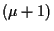

Next: Step length
Up: S
Previous: Self-adaptive behavior
Steady-state EA
also stationary EA, EA with successive population replacement.
Strictly speaking, there is no offspring population. Instead, offspring are
generated gradually replacing the worst individual(s) immediately so that
the population size is kept constant
(see generation gap).
Typical: -ES.
Hans-Georg Beyer
2002-02-25